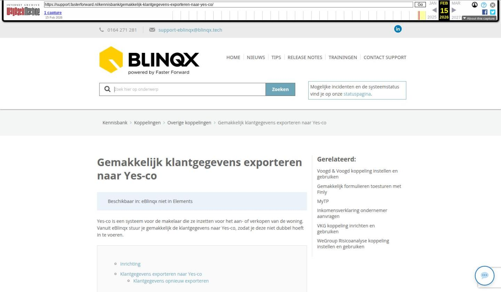

Gemakkelijk klantgegevens exporteren naar Yes-co

Tekstinhoud
Gemakkelijk klantgegevens exporteren naar Yes-co | Support
---
Gemakkelijk klantgegevens exporteren naar Yes-co
Beschikbaar in: eBlinqx niet in Elements
Yes-co is een systeem voor de makelaar die ze inzetten voor het aan- of verkopen van de woning. Vanuit eBlinqx stuur je gemakkelijk de klantgegevens naar Yes-co, zodat je deze niet dubbel hoeft in te voeren.
Inrichting
Klantgegevens exporteren naar Yes-co
Klantgegevens opnieuw exporteren
Dossier exporteren
Dossier verwijderen
Dossierhistorie
Inrichting
Om gebruik te kunnen maken van de koppeling dienen er zaken ingericht te worden. Stuur hiervoor een e-mail naar support-eblinqx@blinqx.tech. Geef hierin aan welke collega's gebruik mogen maken van de koppeling.
Klantgegevens exporteren naar Yes-co
Via het tabblad Export – Yes-co verstuur je de klantgegevens naar Yes-co. Via het dropdownmenu geef je aan welke persoon of organisatie je wilt exporteren. Vervolgens klik je op 'Exporteer'.
Klantgegevens opnieuw exporteren
Het is mogelijk om een partij die reeds geëxporteerd is naar Yes-co nogmaals te selecteren en te exporteren. Er verschijnt dan wel een melding die aangeeft dat de relatie reeds is geëxporteerd. Exporteer je deze relatie nogmaals dan zal deze opnieuw aangemaakt worden in Yes-co en zal de koppeling met de eerder in Yes-co aangemaakte relatie verbroken worden.
Dossier exporteren
Bij het exporteren van een relatie uit een dossier naar een ander dossier wordt de link met de relatie in Yes-co verwijderd. Er is dan geen koppeling meer met het dossier in eBlinqx en de relatie in Yes-co. De relatie blijft wel bestaan in Yes-co. Die wordt door deze actie daar niet verwijderd.
Dossier verwijderen
Als het dossier wordt verwijderd dan wordt de link met de relatie in Yes-co verbroken. De relatie blijft wel bestaan in Yes-co. die wordt door deze actie daar niet verwijderd.
Dossierhistorie
In de dossierhistorie van het dossier is te zien wanneer de relatie is geëxporteerd naar Yes-co.
Laatste update: 15 oktober 2025
Was deze informatie nuttig?
Ja Nee